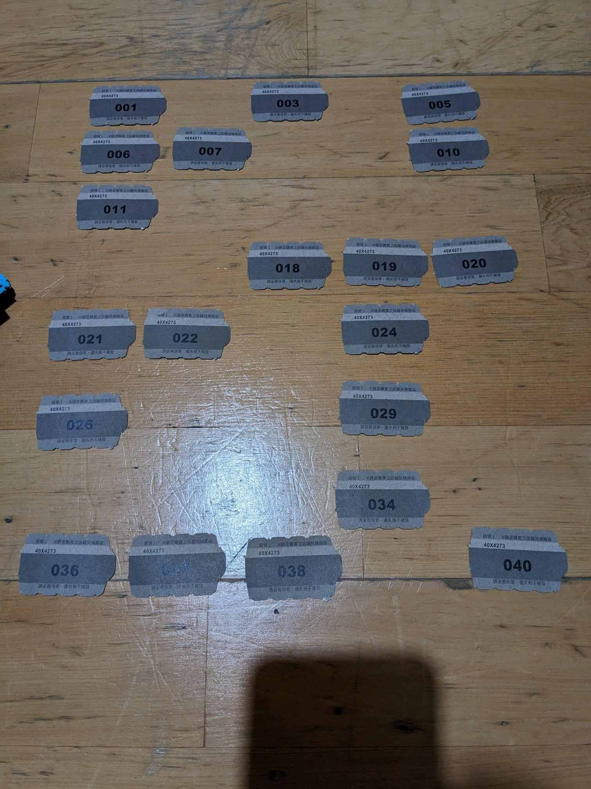

看看現在都幾點了
又到了耍廚的時間了
這次因為某些原因沒辦法到FF，沒有抽到ASLE大出的狂三一番賞(雖然星期五就快抽光了，我還要上班)
但還好後來有開線上抽，就來看看我對狂三的愛純不純
一開箱我心涼了一半，看起來空空的沒有大獎
我就隨便順序開了
B賞 薄紗睡衣掛軸
心滿意足
A賞 45x45抱枕套
看來中3個，好像有點歐?
G賞 陶瓷吸水杯墊
一大包，果然是小獎(所以我一開始沒有打開拍照)
C賞 和傘銀杏金色流沙
E賞 金邊碎鑽色紙
+SP賞 小惡魔超大掛軸
喔喔喔喔喔喔喔喔
開到最後才發現有中大獎，原來是要後續再寄送
為了避免麻煩，所以我就把部份給遮掉了，等之後送到更新的時候再PO出來
比較特別的是序列號是3，果然我的愛是純的
來個合照
我的D賞(巫女銀雪流沙)呢????
最後來盤點一下，總共20抽，(一套40抽，詳細就去
A大粉專看吧)

1SP+3A+1B+2C+0D+5E+8G
還算歐洲，該有的都有，除了D賞沒有其他都有，
所以又來求交換啦，基本上我有重複的都可以交換，
你要我拿多個或是A賞、C賞來換都可以!
如果有意願歡迎私訊我!
--
09/17 更新
拿C賞換到D賞了! 來個合照
無關抱怨一下
去年有預購狂三好幾隻
其中有付了全款一直沒有寄出，卡在商家那邊大概5萬塊，
真的是有考慮去報案
馬der